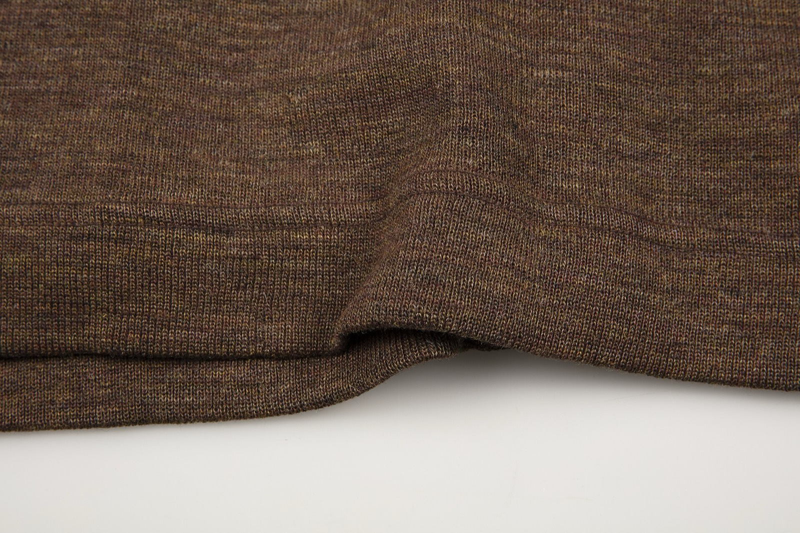

Ce que ton t-shirt te dit, si tu sais le lire
Quatre lignes cousues dans le col suffisent à savoir si un vêtement va durer. Voici comment les lire en deux minutes.
L'ordre compte

La première ligne de l'étiquette, c'est la composition. Dans l'Union européenne, elle est obligatoire, et les fibres y sont listées par ordre décroissant de poids : « 80 % coton, 20 % polyester » veut dire que le coton domine.
Une fibre à quelques pour cent n'est pas là par hasard : l'élasthanne donne du stretch, le polyamide renforce les zones qui frottent. Ce que l'étiquette ne dit pas, c'est la qualité de la fibre : un coton court et un coton long s'écrivent pareil.
À savoir. L'origine (« Fabriqué en… ») n'est pas obligatoire sur un vêtement dans l'UE. Quand elle apparaît, elle désigne souvent la dernière grande étape de fabrication, pas le pays où la fibre a poussé.
Quatre fibres, quatre compromis
Aucune fibre n'est « la bonne ». Chacune règle un problème et en crée un autre. Les mélanges existent pour compenser : un peu de polyester rend un coton plus solide, un peu d'élasthanne le fait revenir à sa forme.
Méfie-toi des noms qui font rêver. Un t-shirt vendu « bambou » est presque toujours en viscose, une cellulose transformée : en principe, c'est ce mot-là qui doit figurer sur l'étiquette.
| Fibre | Origine | Elle fait bien | Son point faible |
|---|---|---|---|
| Coton | Végétale | Respire, doux sur la peau | Sèche lentement |
| Laine | Animale | Isole, même humide | Peut feutrer au lavage |
| Polyester | Synthétique | Sèche vite, résiste à l'usure | Retient les odeurs |
| Viscose | Cellulose transformée | Tombe bien, douce | Fragile quand elle est mouillée |
Cinq symboles pour l'entretien
Presque tous les pays utilisent le même système : cinq formes, que tu retrouves sur chaque étiquette. Une croix par-dessus veut toujours dire « non ».
Le bacLavage. Le chiffre est la température maximale en °C ; une main, c'est à la main ; des barres dessous, un programme plus doux.
Le triangleBlanchiment. Barré : pas d'eau de Javel.
Le carréSéchage. Un cercle dedans : sèche-linge ; les points indiquent la chaleur.
Le ferRepassage. Un point : doux ; trois points : chaud.
Le cercleNettoyage professionnel : réservé au pressing.
Le test des 30 secondes

En magasin, tu n'as pas besoin d'un laboratoire. Quatre gestes suffisent.
1. Lis la composition avant le prix. Si la matière dominante ne te plaît pas, le reste n'a pas d'importance.
2. Étire un coin du tissu. Il doit revenir à sa forme. S'il reste mou, il se déformera dès les premiers lavages.
3. Retourne le vêtement. Coutures droites, fils coupés net, aucun pli qui tire.
4. Regarde le bac. Lavage à la main et pressing seulement ? Demande-toi si tu le feras vraiment.
Le meilleur vêtement est celui que tu es prêt à entretenir.
À toi de jouer

Un pull est trempé par la pluie. Quelle fibre te garde le mieux au chaud ?
Contenu d'exemple. Photos libres de droits (Wikimedia Commons) :
Label with care symbols.JPG — Elkagye — Public domain
Multicoloured Knitting Yarn 4ply.jpg — X201 — CC0
Blue Cotton Fabric Texture Free Creative Commons — Pink Sherbet Photography — CC BY 2.0
Clothing racks in second hand shop, Prague.jpg — MAKY.OREL — CC BY-SA 4.0
Spool of sewing thread made by Mölnlycke - SG1L1735.jpg — vonSmall — Public domain
Brown Wool Knit Cardigan Sweater of Charles Lindbergh - — Piqua Hosiery Co — Public domain
Woven fabric Factory.jpg — Bariston — CC BY-SA 4.0